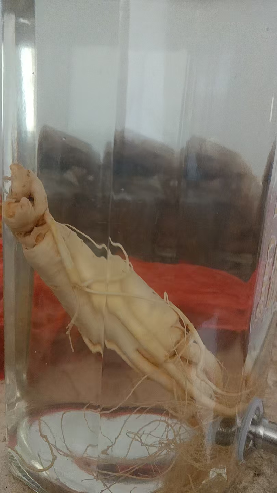
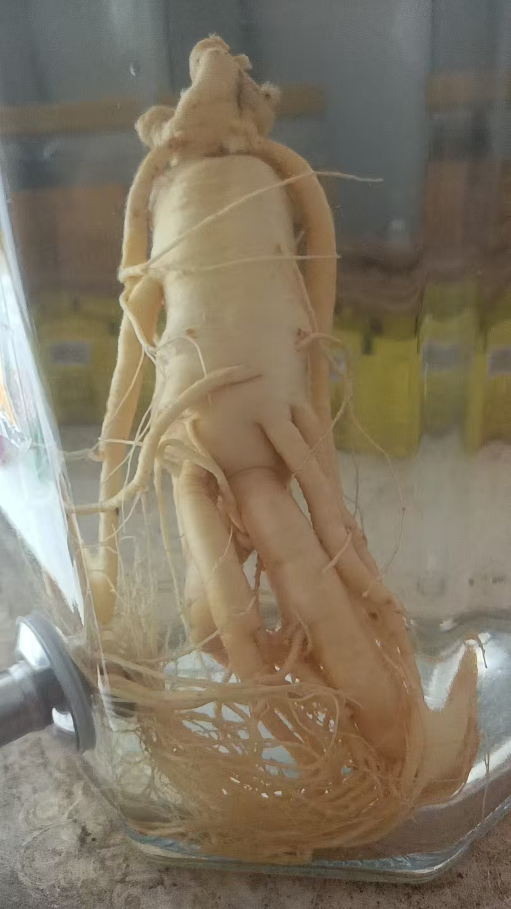
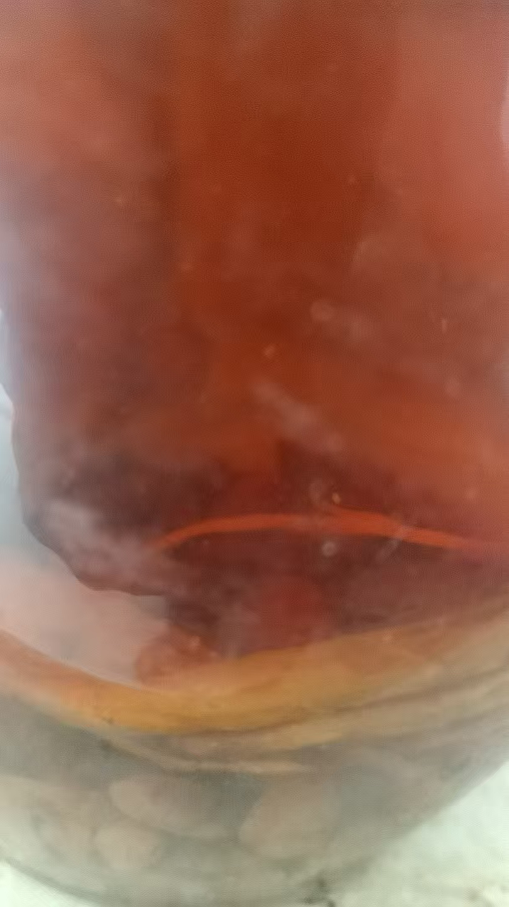
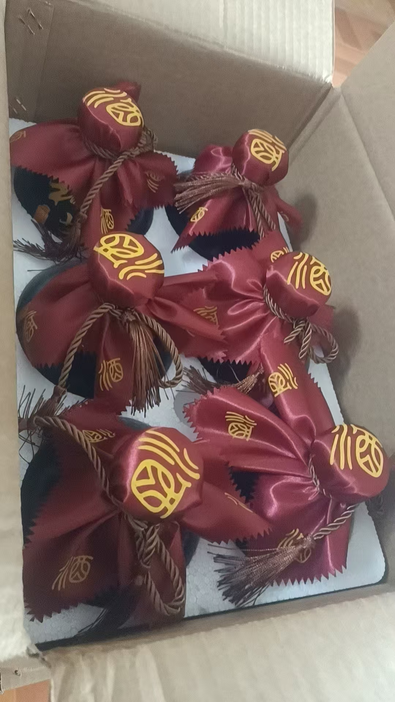
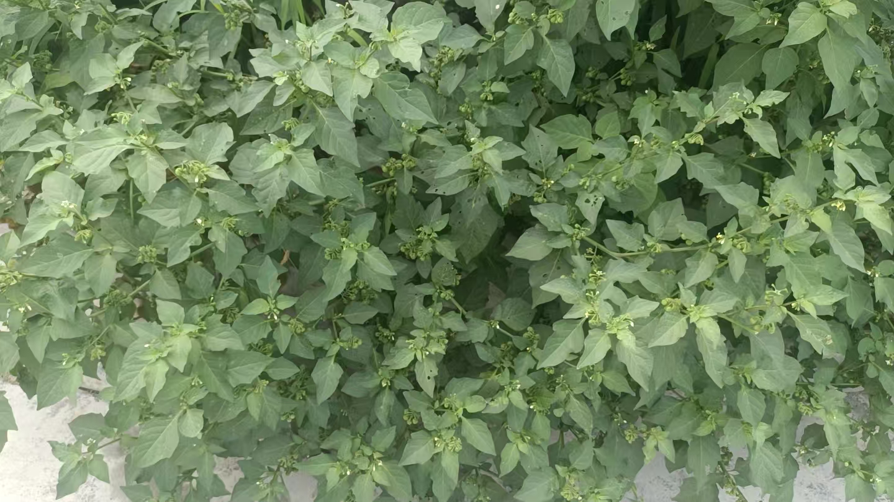
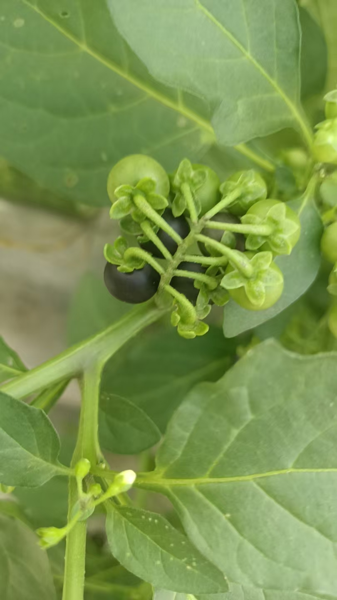
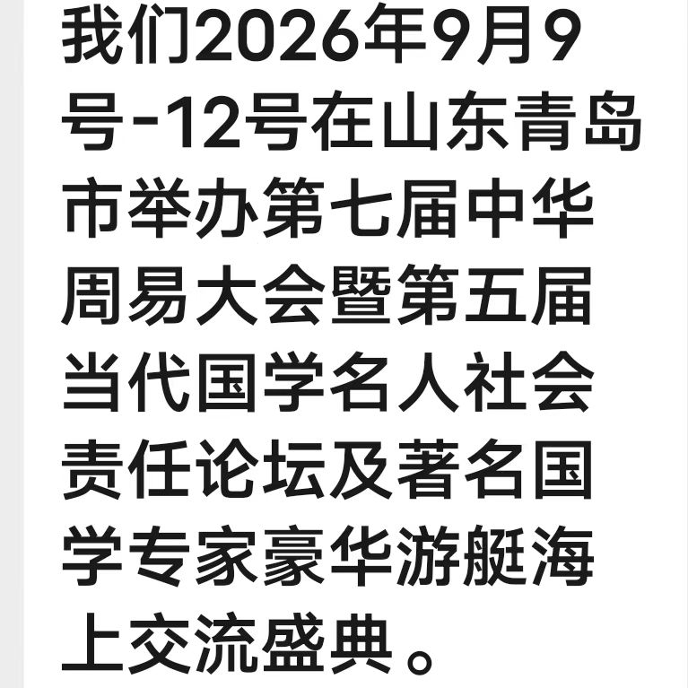
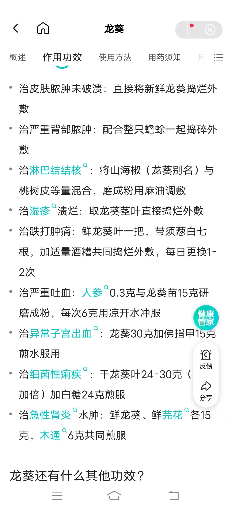

20260707萝卜人参
原始对话记录细雨长且久，灵泽润九州
竟然还在下

一斤半萝卜参


这坛酒泡了六年了
也是奇怪，那一年去昌邑，路边树下有一颗活着的灵芝
我就捡来了
那么大一棵灵芝，就没人看见吗



这应该叫龙葵吧
可是好东西
师父摘叶子下来打汤[呲牙]
黑星星，以前老家特别多
叶子还可以做汤[疑问][疑问]
是啊，特别是吃火锅的时候烫点这个吃
放点肉


还治疗肾炎
路上遇见前女同事，
丈夫尿毒症，
儿子三十多了，女方要彩礼三十万，告吹
这日子还咋过
厂里去年七月份就不发工资了
今年发了三个月的，一共五千多块
以下为编者整理的主题文章
编者整理 · 主题文章
一斤半萝卜参
导读：细雨长且久。图片里是一斤半"萝卜参"，泡了六年的酒，路边树下捡的活灵芝。页末拐到一位前女同事的家事上，日子也是日子。
细雨长且久，灵泽润九州。竟然还在下。
这是开头。像天气预报，也像别的东西。
图片里是一斤半萝卜参。这东西长得像人参，其实叫萝卜参，只是年份久了。另有一页说，不过也十五六年了。
这坛酒泡了六年了。也是奇怪，那一年去昌邑，路边树下有一颗活着的灵芝，我就捡来了。那么大一棵灵芝，就没人看见吗。
我读到这里，想象了一下那棵树。树下的东西，谁会低头看。
还有龙葵。这应该叫龙葵吧，可是好东西。师父摘叶子下来打汤。下面有人说，黑星星，以前老家特别多，叶子还可以做汤，特别是吃火锅的时候烫点这个吃，放点肉。
页末写着，还治疗肾炎。
然后话头一转。路上遇见前女同事，丈夫尿毒症，儿子三十多了，女方要彩礼三十万，告吹。这日子还咋过。厂里去年七月份就不发工资了，今年发了三个月的，一共五千多块。
一整页配的都是植物。萝卜参、灵芝、龙葵。最后落在五千多块上。
我把两样东西并排放着看，一棵树下的灵芝，和一句"这日子还咋过"。它们在同一页。中间没有过渡。
说明与免责：本站为民间修炼、民俗文化与传统文化资料的整理与记录，内容源自传承者口传与个人修习体会，仅供文化交流与研究参考，不构成医疗、健康、投资或任何功效承诺。所述内容属传统术数范畴，请理性看待；如身体不适，请及时就医。请遵守法律法规与公序良俗。